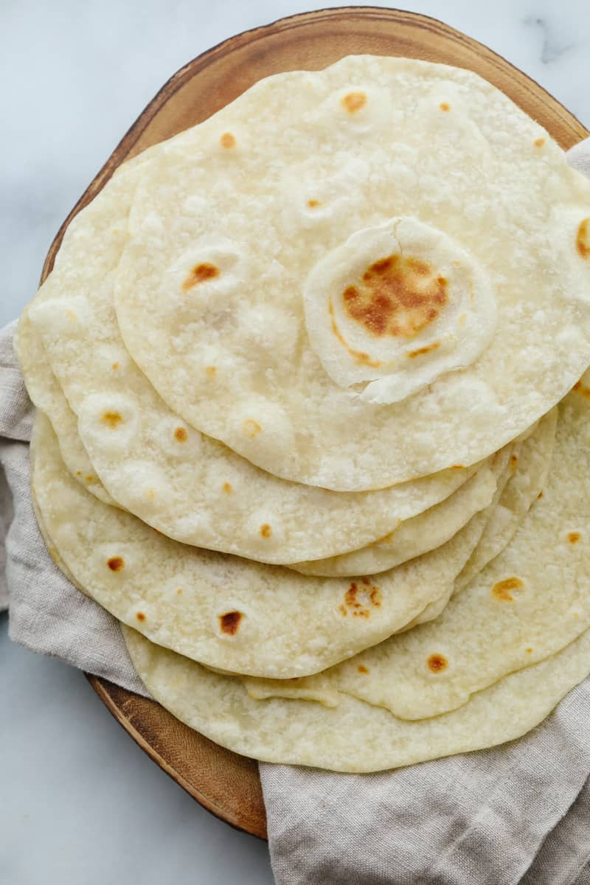

Fresh Tortillas

Homemade Tortillas
There is nothing better than having some fresh tortillas. This recipe will teach you how to make hot and ready tortillas.
Ingredients
- 4 Cups of Flour
- 2 Teaspoons of Baking Powder
- 1 Teaspoon of Salt
- 2 Tablespoons of Lard
- 1 1/2 Cup of Water
Steps
- Begin by mixing the flour, baking powder, and salt together.
- Next, using your hands, knead the lard into the mixture.
- The mixture will be dry like cornmeal, now we can add water until the dough comes together.
- Divide the flour into small balls and roll the out using a rolling pin.
- Now place the tortillas on a preheated skillet and cook until golden.